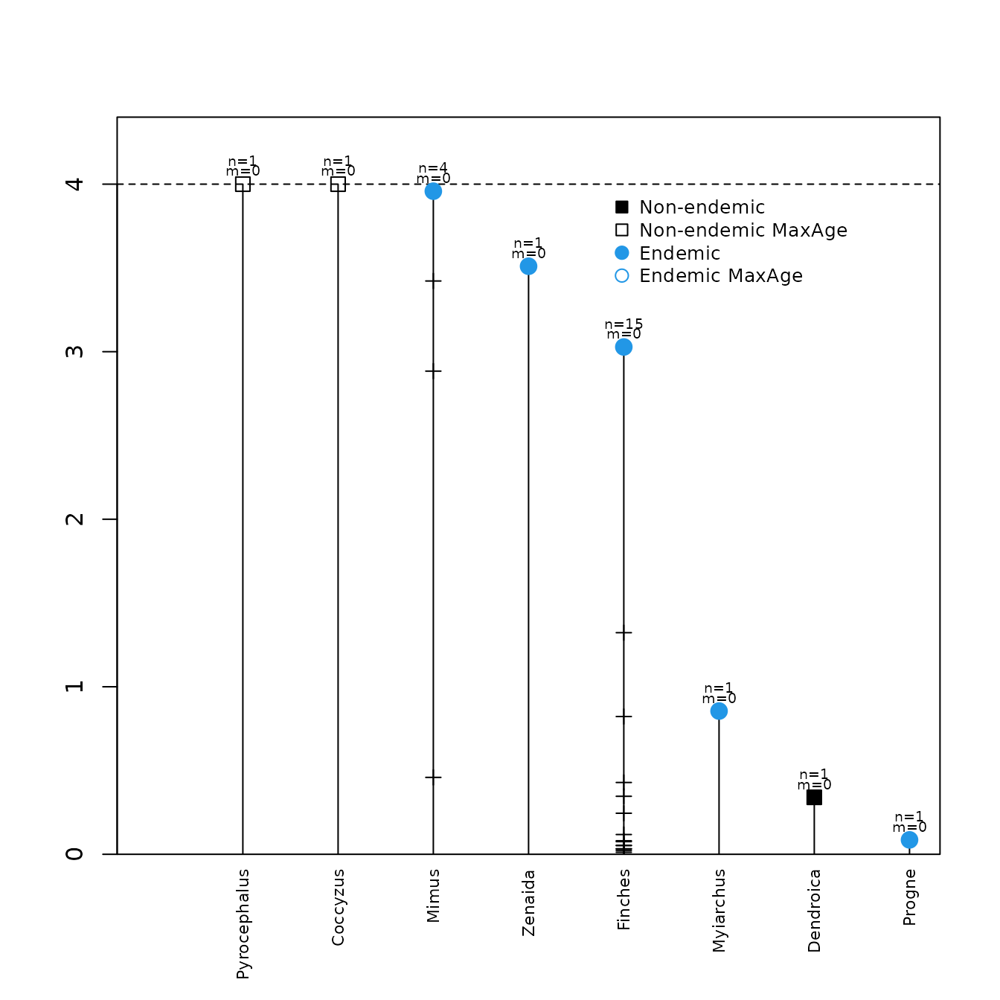

Demo optimizing parameters
Luis M. Valente, Albert B. Phillimore, Rampal S. Etienne
19 May 2015
Source:vignettes/demo_optimize.Rmd
demo_optimize.RmdDAISIE – Dynamic Assembly of Island biotas through Speciation, Immigration and Extinction
Citation: Valente LM, Phillimore AB, Etienne RS (2015) Equilibrium and non- equilibrium dynamics simultaneously operate in the Galápagos islands. Ecology Letters, In press.
Loading data table
To load the package:
The raw dataset is inputted as a table. The Galápagos dataset table can be visualized with:
| Clade_name | Status | Missing_species | Branching_times |
|---|---|---|---|
| Coccyzus | Non_endemic_MaxAge | 0 | 7.456 |
| Dendroica | Non_endemic | 0 | 0.34 |
| Finches | Endemic | 0 | 3.0282,1.3227,0.8223,0.4286,0.3462,0.245,0.0808,0.0527,0.0327,0.0221,0.118,0.0756,0.0525,0.0322,0.0118 |
| Mimus | Endemic | 0 | 3.958,3.422,2.884,0.459 |
| Myiarchus | Endemic | 0 | 0.855 |
| Progne | Endemic | 0 | 0.086 |
| Pyrocephalus | Non_endemic_MaxAge | 0 | 10.285 |
| Zenaida | Endemic | 0 | 3.51 |
Each row in the table represents an independent colonisation event. The table has four columns:
-
Clade_name: name of the independent colonization event. -
Status: One of the following categories:-
Endemic: applicable for both anagenetic species and radiations. -
Non_endemic: If the taxon is not endemic to the island, and the age of colonisation is based on a phylogeny where both island and non-island populations of the species have been sampled. -
Non_endemic_MaxAge: If the taxon is not endemic to the island, and only an upper bound to the time of colonisation of the island is known. This applies if individuals from the island population of the species have not been sampled, but an age of the species is known. -
Endemic&Non_Endemic: When an endemic clade is present and the mainland ancestor has re-colonized. For remote islands this is expected to be very rare.
-
-
Missing_species: Number of island species that were not sampled for a particular clade (only applicable for radiations). -
Branching_times– This should be the stem age of the population/species in the case ofNon-endemic,Non-endemic_MaxAgeandEndemicanagenetic species. For cladogenetic species these should be branching times of the radiation including the stem age of the radiation. Note – if there are species within the radiation that are not found on the island (e.g. back-colonisation) the branching times of these species should be excluded, as the mainland species pool is treated as static.
The same data can also be visualized:
DAISIE::DAISIE_plot_island(Galapagos_datatable, island_age = 4)
#> Colonisation time of 7.456 for Coccyzus is older than island age
#> Colonisation time of 10.285 for Pyrocephalus is older than island age
Formatting table to run in DAISIE
Before running analyses, the datatable needs to be converted to a DAISIE datalist format using the function DAISIE_dataprep.
We will prepare two different datalists based on the Galápagos datatable. In the 1st datalist we will treat all taxa as equivalent. We will specify an island age of four million years (island_age=4) and a mainland pool size of 1000 (M=1000).
data(Galapagos_datatable)
Galapagos_datalist <- DAISIE_dataprep(
datatable = Galapagos_datatable,
island_age = 4,
M = 1000
)
#> Colonisation time of 7.456 for Coccyzus is older than island age
#> Colonisation time of 10.285 for Pyrocephalus is older than island ageIn the 2nd datalist we will allow for the Darwin’s finches to form a separate group for which rates can be decoupled from those governing the macroevolutionary process in all other clades (number_clade_types=2 and list_type2_clades = “Finches”). We will set the proportion of Darwin’s finch type species in the mainland pool to be 0.163. (prop_type2_pool=0.163). If prop_type2_pool is not specified then by default it is given the value of the proportion of the Galapagos lineages that Darwin’s finches represent (1/8=0.125 in this case).
data(Galapagos_datatable)
Galapagos_datalist_2types <- DAISIE_dataprep(
datatable = Galapagos_datatable,
island_age = 4,
M = 1000,
number_clade_types = 2,
list_type2_clades = "Finches",
prop_type2_pool = 0.163
)
#> Colonisation time of 7.456 for Coccyzus is older than island age
#> Colonisation time of 10.285 for Pyrocephalus is older than island ageThe objects Galapagos_datalist and
Galapagos_datalist_2types can now be run directly in
DAISIE functions.
Optimizing parameters using maximum likelihood
The function that conducts maximum likelihood optimization of DAISIE
model parameters is called DAISIE_ML.
Different models can be specified using ddmodel option in
DAISIE_ML:
-
ddmodel = 0: no diversity-dependence -
ddmodel = 1: linear diversity-dependence in speciation rate -
ddmodel = 11: linear diversity-dependence in speciation and immigration rate -
ddmodel = 2: exponential diversity-dependence in speciation rate -
ddmodel = 21: exponential diversity-dependence in speciation and immigration rate
Different types of parameters can be optimized or fixed. The parameters are given in the following order: (1) cladogenesis rate, (2) extinction rate, (3) K’ or carrying capacity (maximum number of species that a clade can attain within the island), (4) colonisation rate, and (5) anagenesis rate.
The identities of the parameters to be optimized or fixed are
specified with idparsopt and idparsfix within
the DAISIE_ML function. For example, to optimize all parameters we set
idparsopt=1:5 and idparsfix=NULL. To optimize
all parameters but fix the rate of extinction, we set
idparsopt=c(1,3,4,5) and idparsfix=2. To
optimize all parameters except cladogenesis and anagenesis we set
idparsopt=c(2,3,4) and idparsfix=c(1,5).
The values of the parameters to be used as initial values for the
optimization are specified with initparsopt, and the values
to be fixed are specified with parsfix. For example, if we
want to optimize all parameters with a starting value of 2 we set
initparsopt=c(2,2,2,2,2) and parsfix=NULL. If
we want all starting rates to be 0.1, but K’ to be fixed at 20, we use
initparsopt=c(0.1,0.1,0.1,0.1) and
parsfix=20.
When running your own data, we strongly recommend that you test multiple initial starting parameters for each model, particularly when optimizing models with multiple free parameters, as there is a high risk of being trapped in local likelihood sub-optima. We also suggest running two rounds of optimization using the optimized parameter set of the 1st round as the initial starting values for the 2nd round. Also note that the initial starting values in the examples of this tutorial may not be appropriate for your data.
Example 1: Optimizing all parameters, with diversity-dependence in speciation and colonisation
We will now optimize all five parameters for a datalist where all
clades share the same parameters. We will set the model with linear
diversity-dependence in speciation rate and in immigration rate using
ddmodel=11. We will set an initial rate of cladogenesis of 2.5, an
initial rate of extinction of 2.7, an initial K’ value of 20, an initial
rate of colonisation of 0.009 and an initial rate of anagenesis of 1.01
(initparsopt = c(2.5,2.7,20,0.009,1.01)). We will optimize
all 5 parameters (idparsopt = 1:5) and we will fix no
parameters (parsfix = NULL,
idparsfix = NULL).
data(Galapagos_datalist)
DAISIE_ML(
datalist = Galapagos_datalist,
initparsopt = c(2.5,2.7,20,0.009,1.01),
ddmodel = 11,
idparsopt = 1:5,
parsfix = NULL,
idparsfix = NULL
) This will take several minutes to run. The parameters optimized and fixed as well as the loglikelihood of the initial starting parameters we have set are shown at the top of the screen output of DAISIE_ML. Once the optimization is completed, the program will output the maximum likelihood parameter estimates and the maximum loglikelihood value. For a given dataset, the likelihood of different DAISIE models can be compared with information criteria such as BIC and AIC.
Example 2: Optimizing model without diversity-dependence
To optimize the parameters of a model with no diversity-dependence, we use the default model (ddmodel=0), and fix the parameter number 3 which corresponds to K’ to infinity (Inf).
data(Galapagos_datalist)
DAISIE_ML(
datalist = Galapagos_datalist,
initparsopt = c(2.5,2.7,0.009,1.01),
idparsopt = c(1,2,4,5),
parsfix = Inf,
idparsfix = 3
) Example 3: Optimizing model with no diversity-dependence and no anagenesis
To optimize the parameters of a model with no diversity-dependence and no anagenesis, we use the default model (ddmodel=0), and fix parameters number 3 and 5, which correspond, respectively to K’ and rate of anagenesis.
data(Galapagos_datalist)
DAISIE_ML(
datalist=Galapagos_datalist,
initparsopt = c(2.5,2.7,0.009),
idparsopt = c(1,2,4),
parsfix = c(Inf,0),
idparsfix = c(3,5)
) Example 4: Optimizing all parameters, but allowing Darwin’s finches to have a separate rate of cladogenesis.
For this example we will use the datalist with Darwin’s finches specified to be of a separate type: Galapagos_datalist_2types.
If two types of species are considered, then the parameters of the second type of species are in the same order as the first set of parameters, but start at number 6: (6) cladogenesis rate of type 2 species, (7) extinction rate of type 2 species, (8) K’ of type 2 species, (9) colonisation rate of type 2 species, and (10) anagenesis rate of type 2 species. There is also an additional parameter when 2 types of species are considered: the proportion of species of type 2 in the mainland pool. This is parameter number 11.
Here we will optimize all parameters, but allow the finches to have a separate rate of cladogenesis. We will fix the proportion of type 2 species in the mainland pool at 0.163 (therefore fixing parameter 11 with idparsfix=11 and parsfix=0.163). Note that because we are only allowing the rate of cladogenesis of Darwin’s finches to vary from the background rate, we need to specify that the other rates for Darwin’s finches remain the same as the background – using idparsnoshift = c(7,8,9,10)).
data(Galapagos_datalist_2types)
DAISIE_ML(
ddmodel=11,
datalist=Galapagos_datalist_2types,
initparsopt= c(0.38,0.55,20,0.004,1.1,2.28),
idparsopt = c(1,2,3,4,5,6),
parsfix = 0.163,
idparsfix = c(11),
idparsnoshift = c(7,8,9,10)
) Example 5: Optimizing a model with no diversity-dependence, but allowing Darwin’s finches to have a separate rate of cladogenesis and extinction.
data(Galapagos_datalist_2types)
DAISIE_ML(
ddmodel=0,
datalist=Galapagos_datalist_2types,
initparsopt = c(0.38,0.55,0.004,1.1,2.28,2),
idparsopt = c(1,2,4,5,6,7),
parsfix = c(Inf,0.163),
idparsfix = c(3,11),
idparsnoshift = c(8,9,10)
)